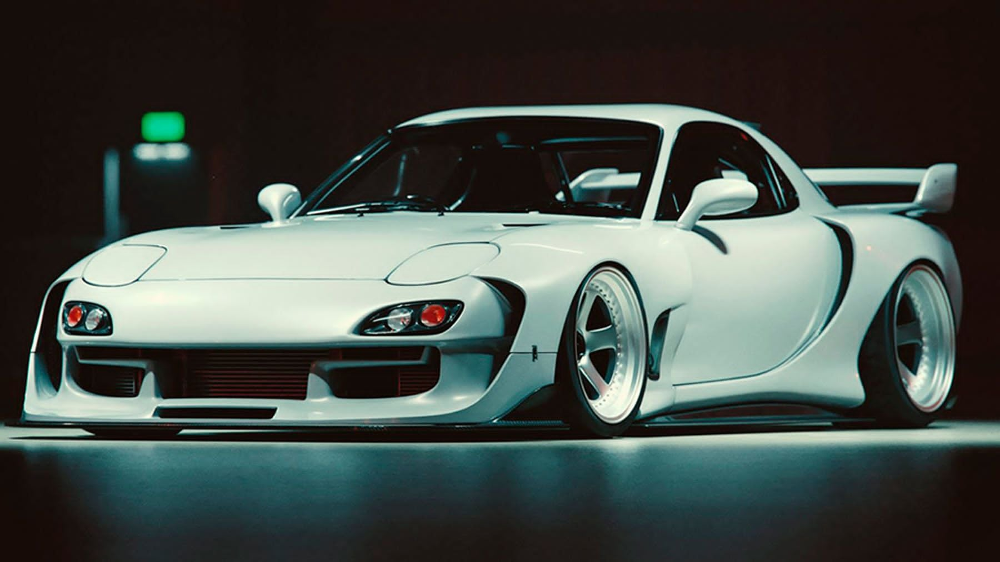
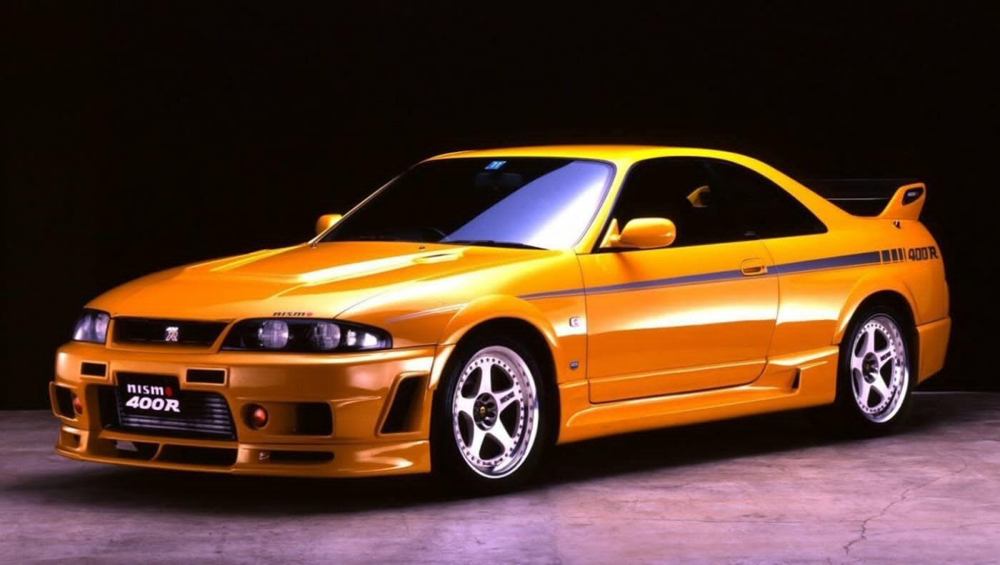

“Japan Domestic Market”.
JDM cars, short for Japanese Domestic Market cars, are vehicles specifically designed and manufactured for the Japanese market. These cars often feature unique styling, performance enhancements, and right-hand drive configurations, making them sought-after by automotive enthusiasts worldwide
-

The Nissan Silvia, also known as the 200SX or 240SX in export markets, embodies the spirit of Japanese performance cars. Its sleek 2-door coupé design, rear-wheel-drive layout, and agile handling made it a favorite among enthusiasts. Under the hood, the Silvia housed a 1.6-liter engine, delivering 133 bhp and a thrilling driving experience. Pop-up headlights and the iconic “Silvia” badge added to its allure. Despite being nearly hand-built, only 554 were produced, making each one a rare gem. Whether carving through mountain roads or gracing car meets, the Silvia remains etched in automotive history—a symbol of speed, style, and spirited driving.
Read more >> -

Ah, the world of JDM (Japanese Domestic Market) cars—a realm where automotive dreams take shape, and enthusiasts revel in unique designs, performance tweaks, and a touch of nostalgia. Let’s buckle up and explore some of the coolest and most compelling JDM Toyotas ever built: Toyota Supra (JZA80): The Supra needs no introduction. Its sleek lines, turbocharged inline-six engine, and rear-wheel-drive layout made it a legend. Whether you’re a fan of the iconic Mk4 or the recent A90 revival, the Supra remains a symbol of speed and style.
Read more >> -

Certainly! Let’s dive into the captivating world of Nissan JDM (Japanese Domestic Market) cars—a realm where automotive dreams take shape, and enthusiasts revel in unique designs, performance tweaks, and a touch of nostalgia. Nissan Skyline: The Skyline needs no introduction. Whether it’s the iconic GT-R or the classic FR versions, the Skyline is a symbol of speed and style. Its sleek lines and turbocharged power have left an indelible mark on automotive history.
Read more >>